시간이 흐를수록 기후변화는
더 큰 재앙이 되어 돌아옵니다


기후변화로부터 우리 스스로를 지키는 작은 변화



시간이 흐를수록 기후변화는
더 큰 재앙이 되어 돌아옵니다
조용한 재앙 기후변화는
치명적 위기가 되고 있습니다.
우리를 위협하는
기후변화에 맞서기 위해
지금, 우리가 함께
변화해야 합니다에 맞서기 위해
매 해 1도씩 상승하는
북극
여름시즌에 더이상 빙하를 볼 수 없게 되는 시기
2035년
파키스탄
100년 만에 가장 많은 비
피해 규모 무려,
주택100만 채
149개의 다리
3,451km에 달하는 도로
세계 밀 생산 2위
인도
지난 4월
121년 만의 기록적인 폭염 50도
밀 수확량 50% 감소전망
초래되는 식량위기
이상기후가 초래한 광범위한 화재
호주
불길에 휩싸인 120만 평
34명 사망
6,000채 의 건물 파괴


아주 작은 생각의 변화가
놀라운 변화가 되어 돌아옵니다
정우성 친선대사
무엇보다 많은 사람들이 기후위기의 심각성을 공유하는 것이 중요해요.
친구와 가족, 동료들이 온실가스 배출을 줄이도록 북돋아주세요.
자신이 사는 지역의 정치인과 산업계를 상대로 온실가스 배출을 줄이기 위한 노력을 지원하도록 압력 넣기입니다.
기후 비상사태가 해결되려면 정치인들이 움직여야 줘야합니다. 따라서 대중들이 그런 목소리를 계속 내면서 압력을 유지하는 것이 중요합니다.